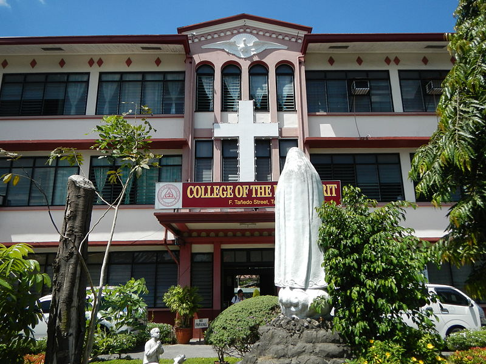

|  |
About Us
What is College of the Holy Spirit of Tarlac
The College of the Holy Spirit of Tarlac (also referred to as CHST; colloquially, "Pirit") is one of the schools directed by the Missionary Sisters Servants of the Holy Spirit in the Philippines. It was established in 1939 as the Catholic Academy of Tarlac. CHST has three buildings within Tarlac City—the primary, secondary, senior high school education ... departments are located in San Sebastian Village. It was originally an exclusive school for girls but in 2005, they started admitting male students which resulted to its growing population. At present, the college has a Level 3 Accreditation Status awarded by the Philippine Accrediting Association of Schools, Colleges and Universities (PAASCU). |